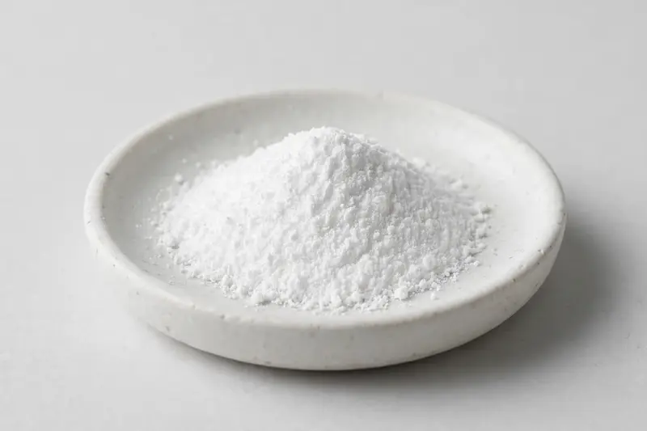

Cacao-derived alkaloid powder for energy and focus-positioned formulations, sourced through partner producers and confirmed against your target spec.

Overview
Theobromine is a naturally occurring xanthine alkaloid found in cacao (Theobroma cacao), used by formulators building energy, focus and pre-workout concepts as a milder alternative to caffeine-led profiles. It appears in capsules, RTD beverages and powdered drink mixes. We are a trading company in Xi'an sourcing through partner producers; product feasibility is confirmed after we receive your target specification.
Specifications below reflect commonly requested options in the market — not a stock list. Share your target spec and we'll confirm exactly what we can supply, honestly.
| Specification | Details |
|---|---|
| Botanical identity | Theobromine powder (xanthine alkaloid, cacao-derived) |
| Marker compound | Commonly requested spec grades: 98% theobromine; actual specs confirmed on inquiry |
| Appearance | Fine powder, color typical of the extract |
| Mesh size | Typically 80–100 mesh (confirm per inquiry) |
| Testing | COA/TDS arranged on request; scope agreed per your spec |
Applications
Documentation
We don't claim in-house labs or certifications we don't hold. COA and TDS documents can be arranged on request, and testing scope is agreed against your specification before supply.
FAQ
Related products
Silybum marianum
Key marker: Silymarin
View specs →Ginkgo biloba
Key marker: Flavone Glycosides
View specs →Panax ginseng
Key marker: Ginsenosides
View specs →CDP-choline (cytidine diphosphate choline)
Key marker: Citicoline Content
View specs →beta-alanine (3-aminopropanoic acid)
Key marker: Beta-Alanine Content
View specs →Send your target spec and volumes — we'll respond with a tailored quotation.
Request a Quote